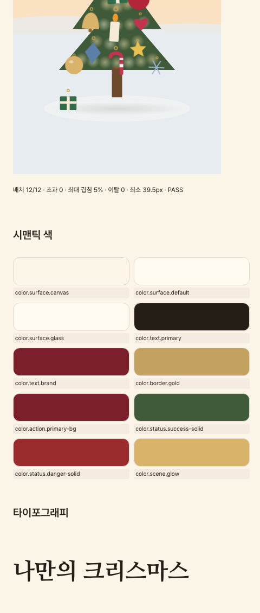

라이브 장면
세계관·트리·장식 수를 바꿔 보세요. 아래 모든 섹션이 같은 세계관을 따라갑니다.
세계관
트리
친구 장식 개
화면 모드
화면 흐름
390×844 실제 크기 화면을 줄여서 보여줍니다. 모든 UI 는 토큰과 컴포넌트 클래스만 씁니다.
공유 포스터 9:16
엔진의 캔버스 렌더러로 1080×1920 PNG 를 그립니다. 인스타그램 스토리 UI 가 덮는 위 12%·아래 18%를 피해 글자를 놓습니다.
1080 × 1920 · 안전 영역 위 12% / 아래 18%
트리 3종 × 장식 개수
트리마다 0, 5, 20, 50개를 같은 점수 분포로 조립했습니다. 겹침·실루엣 이탈·최소 크기는 엔진이 진단합니다.
궁합 점수에 따른 자리
점수가 높을수록 트리 꼭대기와 가운데에 가깝게, 낮을수록 아래 가장자리에 걸립니다. 낮은 점수도 작거나 보이지 않게 만들지 않습니다.
토큰과 컴포넌트
시맨틱 색
타이포그래피
나만의 크리스마스
눈송이 마을의 전나무
크리스마스 이브 저녁, 가장 가고 싶은 곳은?
본문 큰 글씨. 질문과 결과 문구에 쓰고 한 줄 최대 28자 안팎으로 끊는다.
보조 설명 14px. 91점
컴포넌트
주인에게 보여요. 최대 12자
91
궁합 점수아직 장식이 없어요
링크를 공유해 친구를 초대해 보세요.
이전 미리보기와 비교
왼쪽은 단순 SVG 데모 에셋으로 만든 이전 미리보기, 오른쪽은 지금의 장면입니다.
